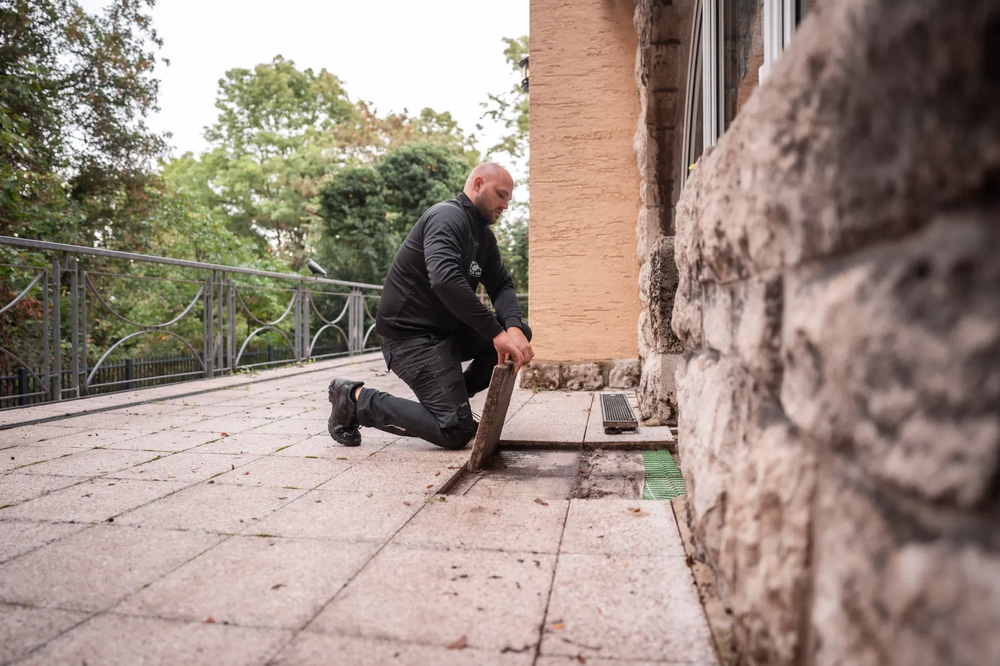
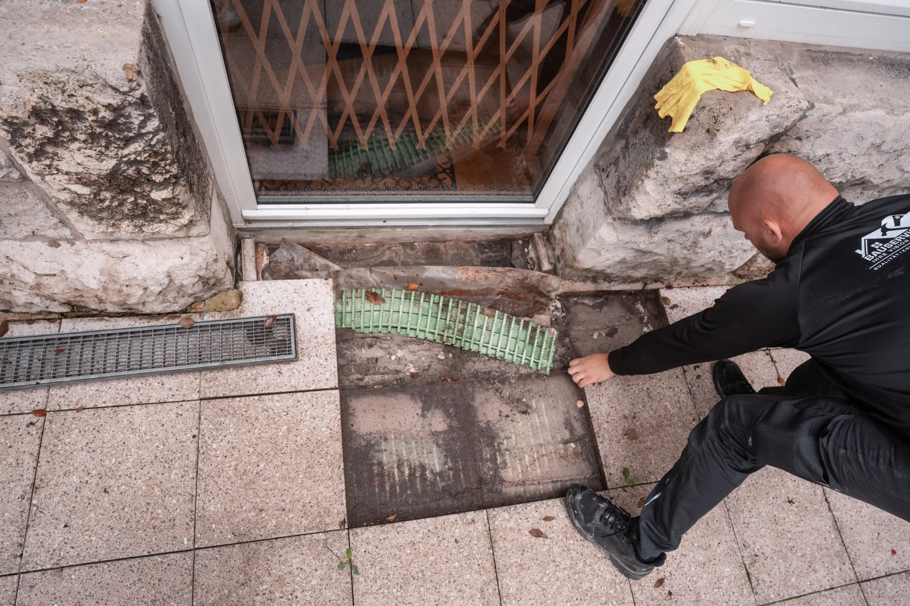
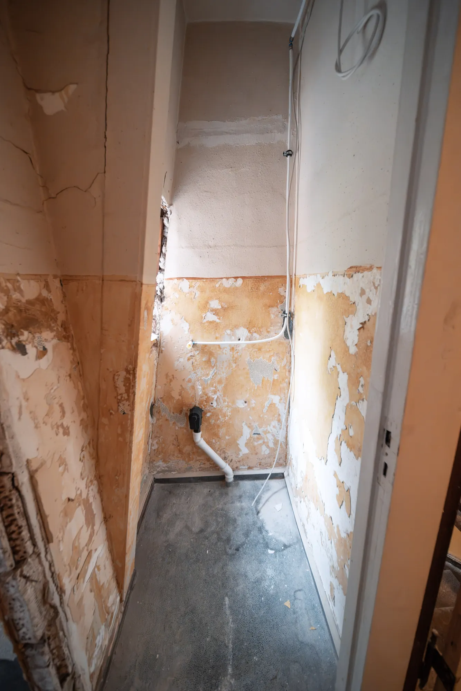
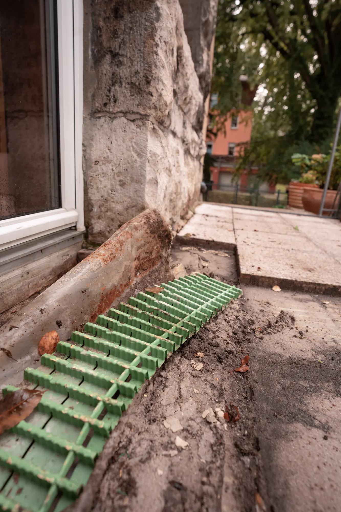
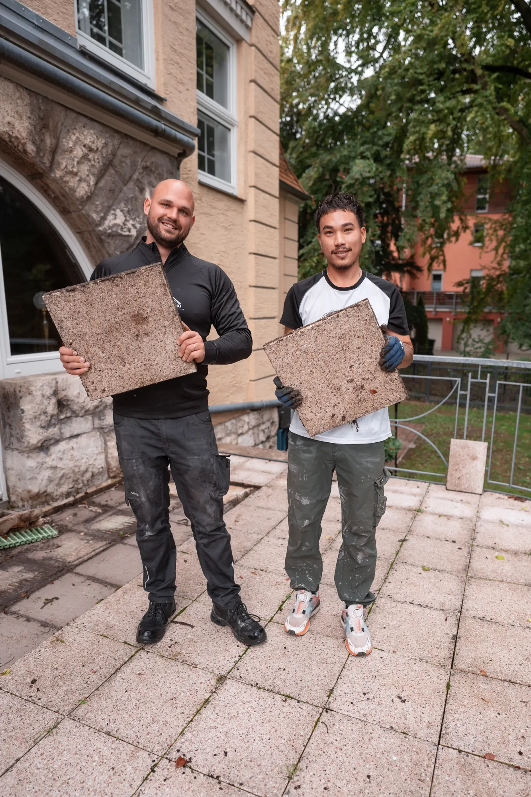
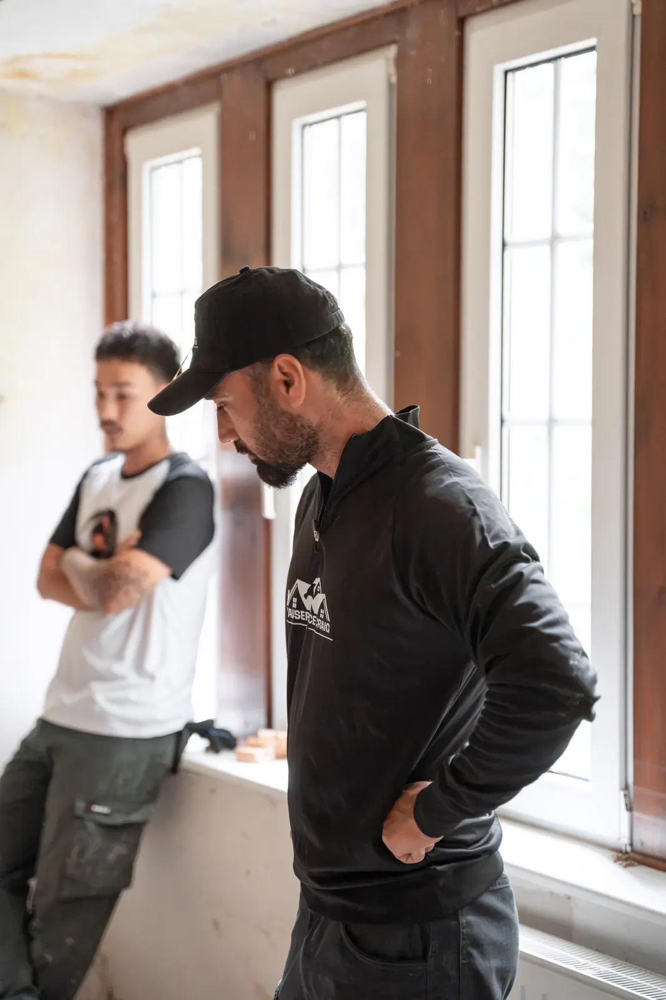

Bausachverständiger für Bauschäden in Thüringen
Bauschäden, Baumängel und Feuchteschäden vor Ort begutachtet und verständlich bewertet. Von Marvin Craig, DEKRA-zertifiziert.
Was wir begutachten
Ihr Baugutachter für private Eigentümer und Bauherren in Bad Berka, Erfurt, Weimar, Jena und ganz Thüringen.
-

Bauschäden
Risse, Abplatzungen, Setzungen oder beschädigte Bauteile: Wir sehen uns den Schaden vor Ort an, suchen die Ursache und bewerten, wie ernst er ist. So wissen Sie, was dringend ist und was warten kann.
-

Baumängel
Nach einem Neubau oder einer Sanierung prüfen wir, ob die Arbeiten fachgerecht und wie vereinbart ausgeführt wurden. Festgestellte Mängel halten wir nachvollziehbar fest, damit Sie gegenüber den ausführenden Firmen eine klare Grundlage haben.
-

Feuchte- und Wasserschäden
Nasse Wände, abplatzender Putz oder Schimmel haben fast immer eine bauliche Ursache. Wir klären, woher die Feuchtigkeit kommt, und zeigen auf, wie sich der Schaden dauerhaft beheben lässt.
-

Terrassen und Außenanlagen
Fehlendes Gefälle, eine falsche Abdichtung an der Türschwelle oder eine verstopfte Entwässerung führen oft zu Schäden am Haus. Weil wir Außenanlagen selbst bauen, erkennen wir solche Fehler schnell.
-

Beläge und Oberflächen
Lose oder gebrochene Platten, Hohlstellen und ausgewaschene Fugen deuten meist auf Probleme im Unterbau hin. Wir prüfen den Aufbau und sagen Ihnen, ob eine Reparatur reicht oder neu gebaut werden muss.
-
Dokumentation und Bewertung
Sie erhalten Befund, Fotos und eine verständliche Bewertung mit Empfehlung. Das hilft bei Gesprächen mit Handwerkern, Bauträgern oder Ihrer Versicherung.
Wer selbst baut, erkennt, wo es hakt.
Marvin Craig ist seit 2016 am Bau tätig und DEKRA-zertifizierter Sachverständiger für die Bewertung von Bauschäden. Er kennt Bauschäden nicht nur aus Gutachten, sondern aus der täglichen Arbeit auf der Baustelle.
Deshalb bewerten wir nicht nur, was zu sehen ist, sondern auch, wie es entstanden ist und wie es sich sinnvoll beheben lässt. Auf Wunsch übernimmt unser Team anschließend die Sanierung, damit Sie nicht von vorn suchen müssen.

So läuft eine Begutachtung ab
Anfrage
Sie schildern uns kurz den Schaden, gern mit Fotos. Wir sagen Ihnen, ob ein Termin vor Ort sinnvoll ist.
Ortstermin
Wir sehen uns den Schaden gemeinsam mit Ihnen an, prüfen den Aufbau und suchen nach der Ursache.
Bewertung
Sie erhalten Befund, Fotos und eine verständliche Einschätzung mit konkreter Empfehlung.
Lösung
Sie entscheiden, wie es weitergeht. Auf Wunsch übernehmen wir die Sanierung mit eigenem Team.
Häufige Fragen
Wann lohnt sich ein Bausachverständiger?
Sobald Risse, Feuchtigkeit oder Schimmel auftreten, wenn Arbeiten nicht wie vereinbart ausgeführt wurden oder bevor Sie eine Abnahme unterschreiben. Je früher ein Schaden bewertet wird, desto einfacher und günstiger ist meist die Behebung.
Was kostet eine Begutachtung?
Das hängt vom Umfang ab, also davon, wie viele Schäden zu prüfen sind und ob Sie eine schriftliche Bewertung benötigen. Nach einem kurzen Gespräch erhalten Sie ein transparentes Angebot.
Was sollte ich zum Termin bereithalten?
Hilfreich sind Fotos vom Schaden, Baupläne, Verträge und Rechnungen der beteiligten Firmen. Notieren Sie außerdem, seit wann Ihnen der Schaden auffällt und ob er sich verändert hat.
Können Sie den Schaden auch beheben?
Ja. Als Bauunternehmen übernehmen wir die Sanierung auf Wunsch mit eigenem Team. Die Bewertung bleibt davon unabhängig, die Entscheidung liegt immer bei Ihnen.
In welchen Orten sind Sie tätig?
Unser Sitz ist in Bad Berka. Wir begutachten Bauschäden in Erfurt, Weimar, Jena, Apolda und in ganz Thüringen.
Schaden entdeckt? Wir sehen ihn uns an.
Schildern Sie uns kurz den Schaden, gern mit Fotos. Wir melden uns persönlich bei Ihnen.
- 0160 7625394Mo bis Fr, 08:00 bis 18:00 Uhr
- Termin online buchen
- info@bauservice-craig.de